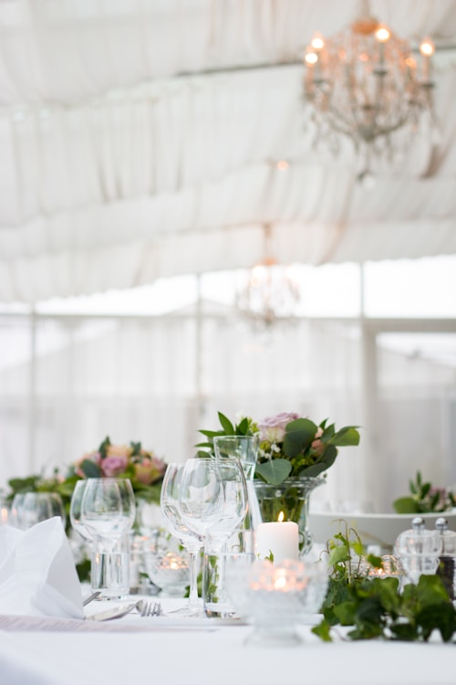

El salon esta lleno de luces, musica y vestidos. Ana llega con Kevin, que se ve impecable y no para de hacerle cumplidos. Deberia ser la noche perfecta.
Entonces ve a Wes.
Esta en el otro extremo del salon, con un grupo de amigos, riendo de algo. No la ha visto todavia. Ana no puede dejar de mirarlo. Y entonces lo entiende todo, de golpe, como cuando enciendes la luz en un cuarto oscuro.
No era Kevin. Nunca habia sido Kevin realmente. Habia estado enamorada de una idea, de un recuerdo, de una sonrisa que le gusto a los doce anos. Pero Wes era real. Wes la conocia. Wes la habia visto enojada, ridicula, terca, y se habia quedado de todas formas.
"Ana, estas bien?" pregunta Kevin.
Ella lo mira. El es buena persona. Pero no es lo que su corazon necesita. "Kevin... lo siento. Necesito hablar con alguien."
A veces la valentia no es hacer lo que soste. Es hacer lo que es verdad.
Que hace Ana?